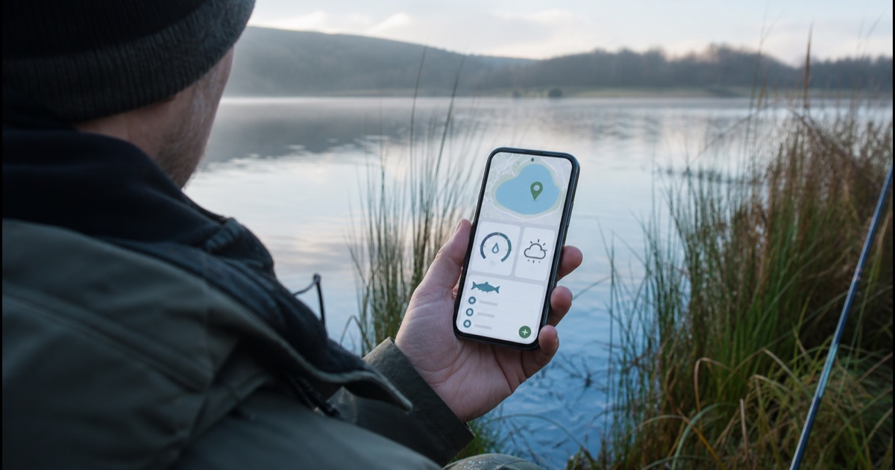

Wissen für deinen Angeltag
Angel-Ratgeber für Fangbuch und Gewässerdaten
Wie findest du eine passende Angel-App? Welche Bedingungen beeinflussen Fische? Unsere Ratgeber verbinden praktische Entscheidungen am Wasser mit nachvollziehbaren Daten.

Angel-App & FangbuchWelche Funktionen am Wasser wirklich zählenSieben Auswahlkriterien: schneller Fangeintrag, GPS-Spots, Wasserdaten, Statistik, Export und Datenschutz.
Gewässer verstehenDas Beißverhalten der FischeWassertemperatur, Sauerstoff, Trübung und Wetter wissenschaftlich fundiert und praktisch erklärt.